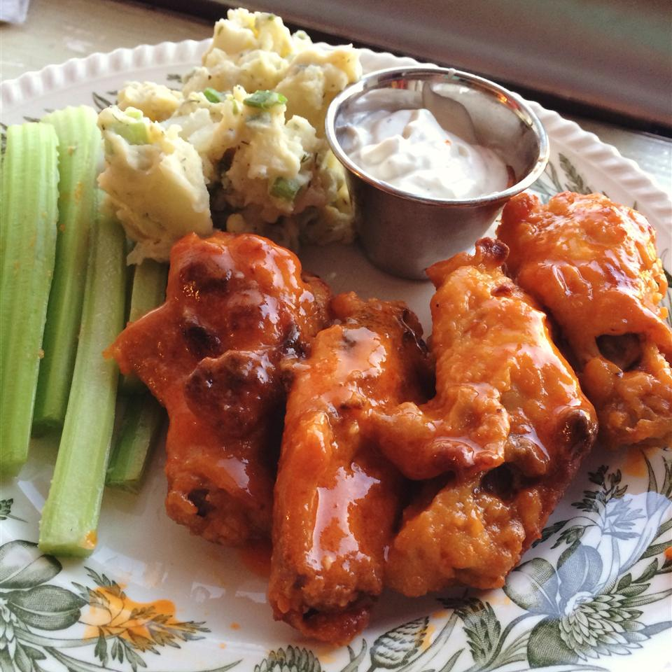

Chicken Wings Recipe

Description
A recipe for very good chicken wings. It should take about 2 hours and yield 20 chicken wings
Ingredients
- 3/4ths cup all-purpose flour
- Half teaspoon cayenne pepper
- Half teaspoon garlic powder
- Half teapsoon salt
- 20 chicken wings
- Half cup melted butter
- Half cup hot pepper sauce
Steps
- Line a baking sheet with aluminum foil, and lightly grease with cooking spray.
Place the flour, cayenne pepper, garlic powder, and salt into a resealable plastic bag, and shake to mix.
Add the chicken wings, seal, and toss until well coated with the flour mixture.
Place the wings onto the prepared baking sheet, and place into the refrigerator. Refrigerate at least 1 hour.
- Preheat oven to 400 degrees F (200 degrees C).
- Whisk together the melted butter and hot sauce in a small bowl. Dip the wings into the butter mixture,
and place back on the baking sheet. Bake in the preheated oven until the chicken is no longer pink
in the center, and crispy on the outside, about 45 minutes.
Turn the wings over halfway during cooking so they cook evenly.
Return to Main Page